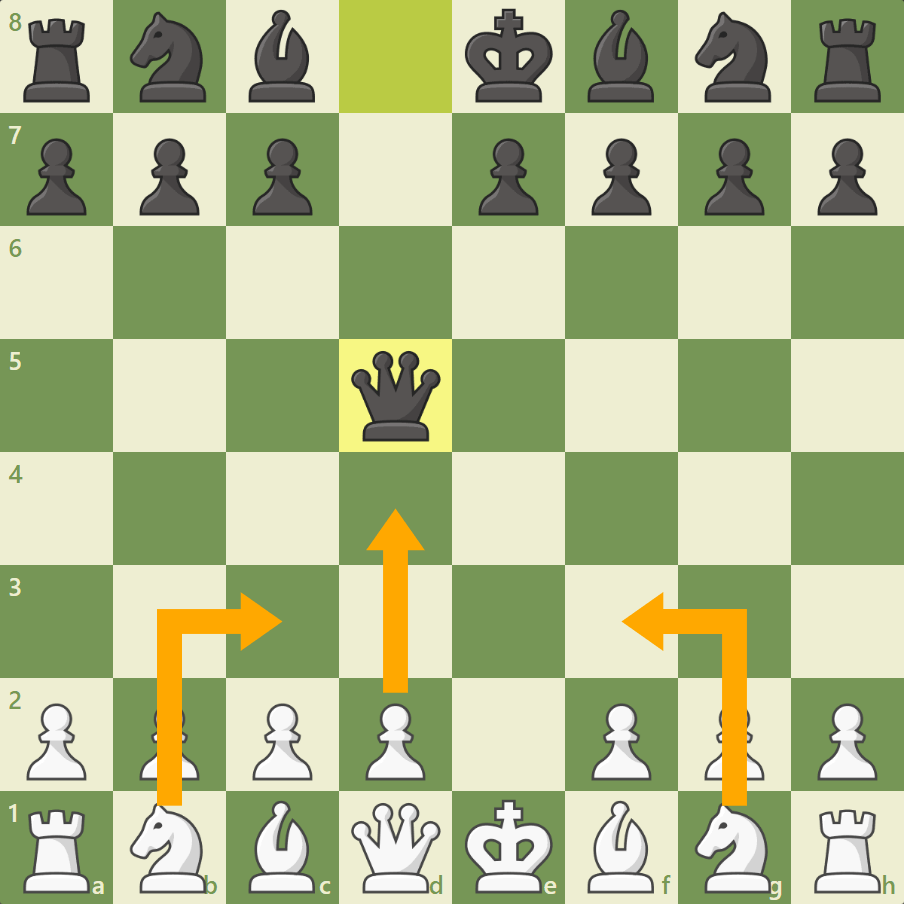

Let me bring you through some openings that can be used against your opponents
The opening phase of a chess game is fairly important
The Scandinavian Defense
The Scandinavian Defense, formerly better known in English language texts as the Center-Counter, is Black's seventh most popular response to 1.e4.
Easily White's best response, and overwhelmingly its most popular, is to capture with 2.exd5. Although it is Black's first move that defines the Scandinavian,
the position after that pawn capture is effectively the starting position for the opening. It's at this point where the Scandinavian really gets interesting.
Variations to The Scandinavian Defense
Black has two main second moves: recapturing with 2...Qxd5, or playing 2...Nf6 planning to recapture
with the knight. The former of these options breaks the rule, often taught to players just starting out,
of not developing the queen too early.
2...Qxd5
White actually has several reasonable options here, but by far the most common is 3.Nc3, immediately
asking Black why the queen exposed herself so soon. The temptation as Black on move three may be
to check the white king down the e-file, but this is considered inferior to three main alternatives.
Click here to see the opening on the board!
3...Qa5
The most common move for Black. Black often plays ...c6 to drop the queen back to c7 at some point,
develops the light-squared bishop to f5 or g4 before playing a pawn to e6. The pawns on c6 and e6
create a solid structure for Black. However this is not the only way to play the position
3...Qd6
This move only becomes more popular over time. It is generally more flexible than the other options
and Black often obtains an imbalanced position including, if possible, queenside castling. The fact that
White can play Nb5 to attack the queen again is not a big deal for Black because it wastes time for
White as well.
3...Qd8
If Black does not want to bring the queen out, this is the move to play. White can try to keep the pawn
with 3.c4 or continue developing with either 3.Bb5+ or 3.d4. The tradeoff for Black is that while the
queen does not come out early, the knight will have to move at least twice to regain the pawn.
How to Play Against the Scandinavian
The first key to playing against the Scandinavian as White is to always play 2.exd5. Other moves like
2.Nc3 or 2.e5 are playable but only give Black an immediately equal position and are rather easy to
meet naturally.
However, White has much more flexibility on move three. Even if Black captures on d5 with the
queen, it is not necessary to play 3.Nc3; 3.Nf3 and 3.d4 are also good. In fact, 3.Nf3 scores 47% for
White compared to 44% with 3.Nc3. No matter what, however, natural development will give White a
fine position.

White has alternatives on move three.
Otherwise, it's pretty much up to Black how the game will go from there. That ability to play several
third moves, while White is somewhat limited, is one reason Black plays the opening despite its reputation as
inferior. But it's that same reputation that gives White hope. In master play, White wins 44% of master games in
the Scandinavian, compared to 40% against the French or 37% against the Sicilian.
Italian Game
1.e4 e5 2.Nf3 Nc6 3.Bc4
The Italian Game is one of the oldest openings
in chess and has been around for centuries. This
classical 1.e4 opening can lead to slower and
positional games as well as open, tactical
battles. Although very common among
beginners, the Italian Game is a part of the
repertoire of players of every level.
Starting Position
The Italian Game starts after the moves 1.e4 e5 2.Nf3 Nc6 3.Bc4. White develops their kingside pieces
sensibly, with the knight controlling the center and the bishop attacking the weak f7-pawn through the
central d5-square.
With this opening, White follows the basic opening principles of fighting for the center and taking care
of the king's safety. From there, the game can evolve into either tactical or positional struggles.
Variations
As an opening that has been around since the 1500s, masters studied the Italian Game intensely
throughout the ages. Below you can see the main variations of this opening.
Giuoco Piano
he most popular variation of the Italian Game is the Giuoco Piano, which starts after 1.e4 e5 2.Nf3
Nc6 3.Bc4 Bc5. The name of this line is an Italian expression that can translate to "soft game" or
"slow game," an indication that this variation often leads to positional games. Despite its name,
White can force a more open game by playing 5.d4 and entering the Center Attack variation.
Giuoco Pianissimo
The Giuoco Pianissimo, as the name suggests, tends to lead to a "very slow game." The d2-d3 push
characterizes this variation and can happen either through 1.e4 e5 2.Nf3 Nc6 3.Bc4 Bc5 4.d3 or
through 1.e4 e5 2.Nf3 Nc6 3.Bc4 Bc5 4.c3 Nf6 5.d3. With this variation, White keeps the center
closed and favors a more positional game.
Evans Gambit
Popularized by Captain W.D. Evans and used extensively by Paul Morphy, The Evans Gambit is
suitable for the aggressive player. White gives up a wing pawn to develop quickly and create a
dangerous attack on the enemy king. This variation adds spice to the slower Giuoco Piano after the
moves 1.e4 e5 2.Nf3 Nc6 3.Bc4 Bc5 4.b4. Although not common at the highest levels, the Evans
Gambit is one of the best-scoring lines among beginner and intermediate players.
How To Play Against The Italian Opening
The Italian Game is not one of the most challenging openings to deal with on Black's side.
Giuoco Piano: Main Lines
The Black player who enjoys a positional game can count on the main lines of the Giuoco Piano for a
balanced game. Black wins 31% of games, draws 33%, and loses 36% in this line—a more than
satisfactory result. Note that if Black chooses this line, they should be prepared for the Evans Gambit.
Evans Gambit Declined
Although Black can accept the gambit and still get a good game, the Evans Gambit Declined
variation scores the best. With 41% of games ending in wins, 23% draws, and 36% losses, Black
stands very well after 1.e4 e5 2.Nf3 Nc6 3.Bc4 Bc5 4.b4 Bb6. The Black player can also rejoice
at the fact that this variation scores remarkably well among non-professional players
Sicilian Defense
1.e4 c5
The Sicilian Defense is the most popular response to White's 1.e4. Employed by masters and
beginners alike, the Sicilian Defense is a reputable and positionally sound opening. Still, the Sicilian is
a combative opening that tends to lead to dynamic and sharp positions.
Since the Sicilian Defense is a fairly complex opening. It is rarely played by Beginners since there are
too many variations and continuity after each moves which makes it fairly complex to play it when you are
a beginner
Variations
Sicilian Defense: Nardjof Variation
The Najdorf Variation (marked by 5. ... a6) is today the most popular
line in the Sicilian. Named after Grandmaster Miguel Najdorf, this
system is designed to exert control over b5 and later put pressure on
White's e4 pawn. It is also a flexible idea, one that can transpose into
many other Sicilian systems.
French Defense
The French Defense is one of the most popular Black responses to 1.e4. It has consistently been a
part of masters' repertoire since the 1800s and one of the favorites of positional players. Usually
leading to slower games, this opening is a good choice for players of all levels.
Variations
French Defense: Advance Variation
1.e4 e6 2.d4 d5 3.e5
In the advance variation of the French Defense, White counters the threat to the e4 pawn by
advancing the pawn, creating a space advantage with locked pawn chains in the center.
The Ruy Lopez
1.e4 e5 2.Nf3 Nc6 3.Bb5
The Ruy Lopez starts after 3.Bb5. This move threatens 4.Bxc6, leaving the e5-pawn
undefended. What makes this opening unique is that the threats on the d5-pawn
can always be defended by the queen.
Variations
The following are some variations that can arise from playing the Ruy Lopez, let’s
see how one can carefully approach them:
Berlin Defense
3…Nf6
Here Black’s plan is very clear: they are planning on castling to ensure the king’s
safety and also planning to launch an attack on the e4-pawn.
4.Nc3:
This protects the e4-pawn, while also finding White develop a minor piece,
which is a rule that is part of the opening fundamentals.
4.d3:
Simply just protecting the pawn and also opening a path for the dark-squared
bishop to travel its way to either the e3 or g5-squares.
4.d4:
On this move, White gambits the pawn, creating a similar structure to the Rio
Gambit. If it is accepted, this will leave White with developmental advantages,
which come from attacking Black’s developed minor pieces.